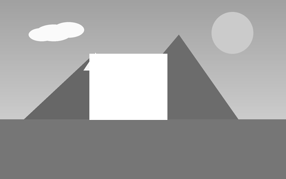
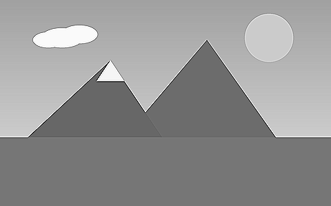
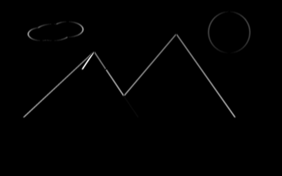
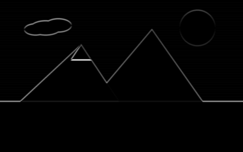
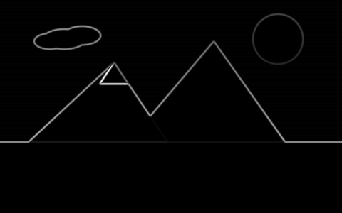
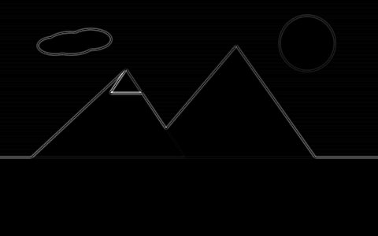
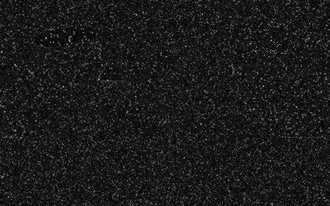

Una imagen es una matriz de números. Cada píxel tiene una posición y un valor entre 0 y 255.
En la Clase 1 vimos qué es una imagen. Hoy vemos qué le hacemos a esa matriz de números. Y hoy usamos una sola operación para todo.
Objetivo
Primero, aritmética simple entre dos imágenes. Después, todo lo demás es la misma operación con distinta matriz de pesos.
01Aritmética de imágenesSumar, restar y mezclar dos imágenes, píxel a píxel
02La operación — la convoluciónQué es un kernel y cómo cambia cada píxel usando sus vecinos
03Filtros de suavizadoPromedio, gaussiano, mediana — quitar ruido y detalle
04Filtros de bordesSobel, Laplaciano y Canny — encontrar dónde cambia la imagen
Acto 1 · Aritmética de imágenes
SUMAR.
Antes de vecindarios y kernels, lo más simple: un píxel es un número, y los números se pueden sumar.
Acto 1 · Aritmética de imágenes
Sumar dos imágenes, píxel a píxel
306090100150200104070
Imagen A
+
101010101010101010
Imagen B
=
4070100110160210205080
Resultado
Dos imágenes del mismo tamaño: se suma el valor de cada píxel con el píxel que está en la misma posición de la otra imagen. Nada de vecinos — cada píxel solo mira a su pareja, en la otra imagen. (Ojo: esto es justo lo contrario de lo que viene después. Aquí un píxel combina con OTRA imagen, en la misma posición. En la convolución, un píxel combina con SUS VECINOS, en la MISMA imagen.)
Imagen A — la escenaImagen B — capa pareja (+80)cv2.add(A, B) — nota el cielo saturado
Con una imagen de verdad se nota algo que el ejemplo con números no muestra: donde la escena ya estaba clara (el cielo), sumar 80 la manda directo a 255 — el techo de la próxima diapositiva, ya en acción.
Acto 1 · Aritmética de imágenes
El problema: el techo de 255
200 + 100 = 300, pero un píxel no puede pasar de 255.
255
cv2.add(a, b) → satura
≠
44
a + b a mano (uint8) → da la vuelta
OpenCV satura: nunca pasa de 255 ni baja de 0. Pero si sumas los arrays de NumPy directamente, sin pasar por cv2.add, el tipo uint8 "da la vuelta" — 300 se convierte en 44 (300 mod 256). Un píxel que debía verse blanco y brillante, se ve oscuro. Por eso: siempre cv2.add, nunca arr1 + arr2 a mano.
Acto 1 · Aritmética de imágenes
Resta y diferencia: ¿qué cambió?
Cuadro 1

Cuadro 2 — algo nuevo apareciócv2.absdiff — aquí cambió algo
cv2.subtract(a, b) también satura (nunca da negativo). cv2.absdiff(a, b) da directo el valor absoluto de la diferencia, sin importar cuál imagen es más clara. Comparar dos cuadros seguidos de una cámara IoT así es la forma más simple de detectar movimiento.
Acto 1 · Aritmética de imágenes
Mezclar dos imágenes, con pesos
resultado = α·A + β·B + γ
0.7 × 200 + 0.3 × 50 + 0 =155
Sirve para mezclas suaves: una transición entre dos imágenes, una marca de agua semitransparente, un mapa de calor superpuesto sobre una foto. α y β no tienen que sumar 1 — pero si suman 1, el brillo total de la imagen se mantiene parecido.
Acto 1 · Aritmética de imágenes
Aclarar sombras: la transformación logarítmica
s = c · log(1 + r)· 5 → 82 · 200 → 244
OriginalTransformación logarítmica
Sumar y restar cambian el brillo parejo: le suman lo mismo a un píxel oscuro que a uno claro. El logaritmo no — crece rápido al principio y se aplana después, así que separa mejor los tonos oscuros (5 → 82, un salto enorme) y casi no toca los tonos claros (200 → 244). Sirve para "sacar" detalle de una foto subexpuesta, como la de una cámara IoT filmando de noche.
γ menor que 1: aclara, sobre todo las sombras. γ mayor que 1: oscurece, sobre todo las luces altas. γ = 1 no cambia nada. Es la misma idea del logaritmo, pero ajustable con un solo número — y es la curva que usan cámaras y pantallas para corregir cómo el ojo humano percibe el brillo (no es lineal).
Acto 1 · Aritmética de imágenes
En OpenCV: aritmética de imágenes
import cv2
import numpy as np
a = cv2.imread("cuadro1.png", cv2.IMREAD_GRAYSCALE)
b = cv2.imread("cuadro2.png", cv2.IMREAD_GRAYSCALE)
# suma con saturación: nunca pasa de 255
suma = cv2.add(a, b)
# resta con saturación: nunca baja de 0
resta = cv2.subtract(a, b)
# diferencia absoluta |a - b|, sin importar cuál es mayor
diferencia = cv2.absdiff(a, b)
# mezcla ponderada: 0.7*a + 0.3*b + 0
mezcla = cv2.addWeighted(a, 0.7, b, 0.3, 0)
# logaritmo: aclara sombras (c ajusta para que 255 siga dando ~255)
c = 255 / np.log(1 + 255)
log_img = np.uint8(c * np.log(1 + a.astype(np.float64)))
# gamma: menor que 1 aclara, mayor que 1 oscurece
gamma = 0.4
gamma_img = np.uint8(((a / 255.0) ** gamma) * 255)
Las cuatro primeras reciben dos imágenes del mismo tamaño y tipo de dato — si no coinciden, OpenCV lanza un error. Log y gamma trabajan sobre una sola imagen, en punto flotante — por eso el paso extra de convertir con .astype(np.float64) y volver a uint8 al final. Con esto ya podemos combinar imágenes completas, y aclarar u oscurecer a propósito. Ahora, a combinar un píxel con sus propios vecinos.
Acto 2 · La operación
VECINDARIO.
Ya sumamos y restamos imágenes completas, número contra número. Ahora algo distinto: un píxel solo casi no dice nada — lo importante es compararlo con sus vecinos, dentro de la misma imagen.
Acto 2 · La operación
Qué es una convolución
Recorrer la imagen píxel por píxel. En cada uno, cambiar su valor combinándolo con sus vecinos.
Esa combinación usa una matriz pequeña de números: el kernel (también llamado máscara o filtro). Cambiar el kernel cambia el efecto. Eso es lo único distinto entre un blur y un detector de bordes.
Acto 2 · La operación
El kernel: una matriz de pesos
0−10−15−10−10
Kernel 3 × 3 · realce (sharpen)
Casi siempre mide 3×3, 5×5 o 7×7 — un número impar, para tener un centro claro. El centro (rojo) es el peso del propio píxel. Los demás números son el peso de cada vecino.
La ventana roja se pone sobre un píxel. Cada valor se multiplica por el peso del kernel en esa posición. Se suman los 9 resultados: ese número es el nuevo valor del píxel del centro. Después la ventana se mueve un paso y se repite, hasta cubrir toda la imagen.
Acto 2 · La operación
Un ejemplo con números
909090909090101010
Vecindario (píxeles)
⊛
−1−2−1000121
Kernel (Sobel vertical)
=−320
La cuenta: 40 − 360 = −320. Un número grande significa un cambio brusco: aquí hay un borde horizontal. Si todos los píxeles fueran parecidos, el resultado daría casi 0.
Acto 2 · La operación
¿Y en el borde de la imagen?
En los bordes de la imagen, la ventana 3×3 no cabe completa. Hay que inventar los píxeles que faltan.
01Reflejar el bordeCopiar los píxeles de adentro, como en un espejo. Es lo que usa OpenCV por defecto
02Repetir el último píxelEstirar el valor del borde hacia afuera
03Rellenar con ceroFácil, pero deja un borde oscuro que no es real
Acto 2 · La operación
En OpenCV: cv2.filter2D
# Aplicar CUALQUIER kernel a una imagen
import cv2
import numpy as np
img = cv2.imread("escena.png", cv2.IMREAD_GRAYSCALE)
# kernel de realce: resalta el centro, resta los vecinos
kernel = np.array([[ 0, -1, 0],
[-1, 5, -1],
[ 0, -1, 0]], dtype=np.float32)
# ddepth = -1 -> la salida tiene la misma profundidad que la entrada
salida = cv2.filter2D(img, -1, kernel)
cv2.imwrite("escena-realce.png", salida)
Todos los filtros de hoy son casos de esta misma función. OpenCV también trae funciones ya hechas —más rápidas— para los filtros más comunes.
Acto 2 · La operación
El realce, aplicado
909090909090101010
El mismo vecindario de la diapositiva 16
⊛
0−10−15−10−10
Kernel de realce
=170
Original (gris)

filter2D · kernel de realce
Con Sobel, este mismo vecindario daba −320 (el borde). Con realce da 170, casi el doble del valor original (90): el filtro exagera el salto que ya estaba ahí. La suma de los pesos es 1, así que el brillo general de la imagen no cambia.
Acto 3 · Suavizado
SUAVIZAR.
A veces la imagen no llega limpia. Antes de buscar bordes, hay que arreglar eso.
Acto 3 · Suavizado
Qué es el ruido
200200200200200200200200200200200200200200200
Lo que debería leer el sensor
19820319725520101992021982041962011992030
Lo que en realidad lee
Esta zona de la imagen es pareja: todos los píxeles deberían valer lo mismo, 200. Pero el sensor no es perfecto — lee valores parecidos, no iguales. Y a veces uno se dispara a 0 o a 255 (en rojo). Eso, junto, es el ruido.
Acto 3 · Suavizado
¿Qué lo produce?
01Poca luzEl sensor amplifica la señal (ISO alto) — y junto con ella, el error
02Sensor baratoCada punto del sensor no responde exactamente igual que sus vecinos
03Transmisión o compresiónUn dato que se pierde en el camino se convierte en un píxel a 0 o a 255 — el "sal y pimienta"
Es información falsa, mezclada con la real. No podemos evitarla en el sensor — pero sí podemos quitarla de la imagen. De eso trata el resto de este acto.
Acto 3 · Suavizado
Así se ve en una foto real
Misma escena, con ruido del sensor
El mismo ruido de la diapositiva anterior, pero sobre la foto completa. Si buscamos bordes directamente aquí, encontramos cientos de bordes falsos. Primero hay que suavizar.
Acto 3 · Suavizado
Blur de caja (promedio)
1982031971990202196201199
Vecindario · el centro debería ser ≈200
⊛
111111111
× 1/9 · todos pesan igual
=177
Ese 0 del centro es ruido: el sensor falló justo en ese píxel. El promedio de los 9 vecinos da 177 — mejor que 0, pero todavía lejos de 200. El error no desaparece, se reparte entre todos.
Acto 3 · Suavizado
Blur gaussiano
1982031971990202196201199
El mismo vecindario de antes
⊛
121242121
× 1/16 · el centro pesa más que las esquinas
=150
Sorpresa: da peor que el promedio (150, no 177). El gaussiano le pone más peso justo al centro — y aquí el centro es el píxel dañado. Contra un ruido de punto suelto, pesar más el centro no ayuda: ayuda a suavizar de forma más natural cuando NO hay un punto dañado ahí.
Mira la primera imagen: es la que tiene ruido, antes de suavizar. Y mira los tres números de arriba, sobre nuestro vecindario con el 0 en el centro: la mediana no es una convolución, toma el valor del medio, no un promedio — por eso es la única que casi "adivina" el valor real. El promedio y el gaussiano solo diluyen el error entre los vecinos.
Acto 3 · Suavizado
En OpenCV: suavizado
img = cv2.imread("c2-ruido.png", cv2.IMREAD_GRAYSCALE)
# promedio: kernel de 9x9
box = cv2.blur(img, (9, 9))
# gaussiano: kernel 9x9, sigma calculado por OpenCV si se pasa 0
gauss = cv2.GaussianBlur(img, (9, 9), 0)
# mediana: tamaño impar; excelente contra sal y pimienta
median = cv2.medianBlur(img, 5)
Regla práctica: usa GaussianBlur casi siempre. Usa la mediana solo si el ruido es de puntos sueltos. Casi nunca uses el promedio: el gaussiano da mejor resultado por el mismo costo.
Acto 4 · Bordes
BORDES.
Un borde es un lugar donde la imagen cambia de golpe. Encontrarlo es medir ese cambio.
Acto 4 · Bordes
Un borde es una derivada grande
−101
Kernel 1 × 3 · derivada en x
Este kernel resta: píxel de la derecha menos píxel de la izquierda. En una zona plana, el resultado es 0. En un borde, el resultado es grande. Los detectores de bordes son, en el fondo, esta resta.
Acto 4 · Bordes
Sobel: derivada en x y en y
−101−202−101
Sobel X · bordes verticales
−1−2−1000121
Sobel Y · bordes horizontales
Es la misma resta de antes, más un pequeño suavizado que la hace menos sensible al ruido. Sobel X encuentra bordes verticales. Sobel Y encuentra bordes horizontales. ¿Recuerdas el −320 de la diapositiva 16? Ese cálculo ya era exactamente esto: Sobel Y sobre un borde horizontal.
Acto 4 · Bordes
Sobel X, Sobel Y y la magnitud
Original (antes)

|Sobel X|

|Sobel Y| — nota el horizonte

Magnitud √(Gx² + Gy²)
Al lado, la imagen original: así se ve antes de pasarla por Sobel. El horizonte casi no aparece en Sobel X, pero sí en Sobel Y. Si combinamos los dos, obtenemos los bordes en cualquier dirección.
Acto 4 · Bordes
En OpenCV: cv2.Sobel
img = cv2.imread("escena.png", cv2.IMREAD_GRAYSCALE)
img = cv2.GaussianBlur(img, (3, 3), 0) # siempre suavizar antes# CV_64F: permite valores negativos (un borde puede ir en los dos sentidos)
gx = cv2.Sobel(img, cv2.CV_64F, 1, 0, ksize=3) # derivada en x
gy = cv2.Sobel(img, cv2.CV_64F, 0, 1, ksize=3) # derivada en y
mag = cv2.magnitude(gx, gy) # √(gx² + gy²)
mag = cv2.normalize(mag, None, 0, 255, cv2.NORM_MINMAX)
mag = mag.astype("uint8") # volver a 0..255 para verlo
Si la salida es CV_8U, OpenCV recorta los negativos a 0 y se pierde la mitad de los bordes. Por eso usamos CV_64F, y normalizamos al final solo para poder verlo.
Acto 4 · Bordes
Laplaciano: un solo kernel, todas las orientaciones
909090909090101010
El mismo vecindario de la diapositiva 16
⊛
0101−41010
Kernel del Laplaciano
=−80

Con GaussianBlur antes

Sin suavizar, con ruido
Con Sobel, este mismo vecindario daba −320 (diapositiva 16). Con Laplaciano da −80: sigue marcando el borde con un número grande, pero mide la curvatura, no la pendiente. El problema es ese −4 en el centro: si en vez de un borde hay ruido, ese peso tan grande lo amplifica — por eso casi siempre necesita GaussianBlur antes.
Acto 4 · Bordes
Canny no es un kernel: es un pipeline
01SuavizarGaussianBlur, para quitar el ruido
02GradienteSobel X e Y: cuánto y hacia dónde cambia cada píxel
03AdelgazarDejar solo el píxel más fuerte de cada borde, para que quede una línea delgada
04Histéresis (dos umbrales)Es borde seguro si pasa el umbral alto. Un borde débil se guarda solo si toca a uno seguro
Nuestro vecindario de la diapositiva 16:320> umbral alto (160) → paso 04: borde seguro, sin dudar
Por eso Canny da líneas finas y continuas, no un mapa de grises. Es el detector de bordes más usado.
Regla práctica: el umbral alto es 2 o 3 veces el bajo. ¿Muchos bordes falsos? Sube los umbrales. ¿Faltan bordes? Bájalos.
Resumen
Un filtro = un kernel = un efecto
Filtro
Qué hace el kernel
Efecto
OpenCV
Promedio
Media del vecindario (pesos iguales)
Suaviza, quita detalle y ruido
cv2.blur
Gaussiano
Media ponderada por campana de Gauss
Suaviza natural; paso previo a bordes
cv2.GaussianBlur
Mediana
Valor mediano (no es convolución)
Elimina sal y pimienta
cv2.medianBlur
Realce
Centro positivo, vecinos negativos
Acentúa los bordes existentes
cv2.filter2D
Sobel
Primera derivada en x o en y
Fuerza y dirección de los bordes
cv2.Sobel
Laplaciano
Segunda derivada (todas direcciones)
Bordes finos; sensible al ruido
cv2.Laplacian
Canny
Pipeline: blur → Sobel → adelgazar → histéresis
Líneas de borde finas y continuas
cv2.Canny
El proceso típico: leer la imagen → pasar a grises → GaussianBlur → Canny → cv2.findContours para sacar las formas. Así empieza la etapa de "procesamiento" del pipeline AIoT de la Unidad 01.